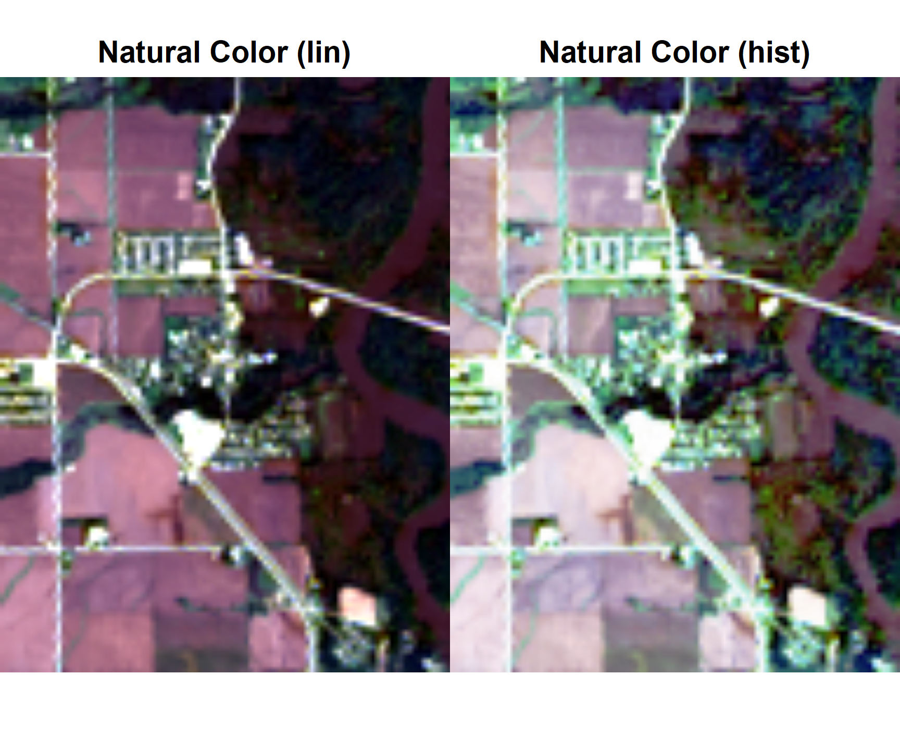
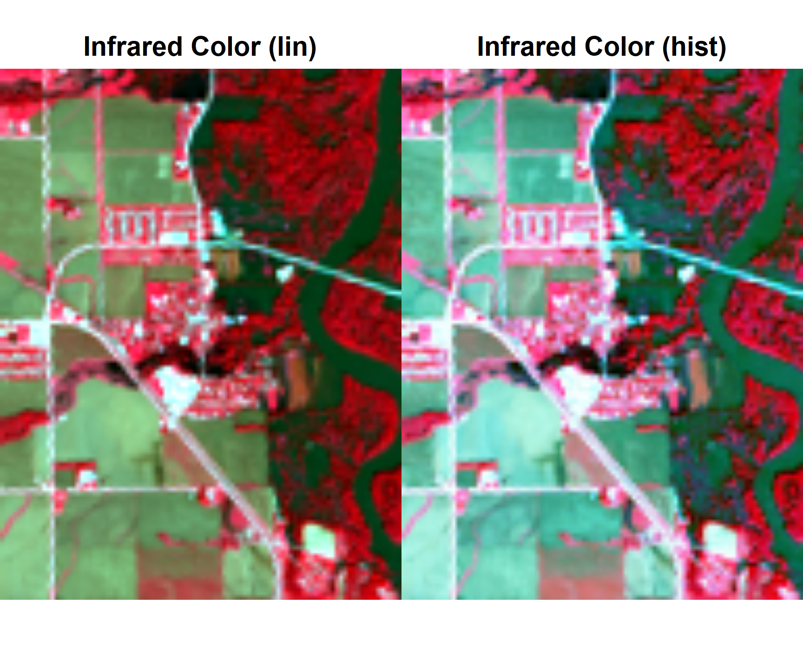
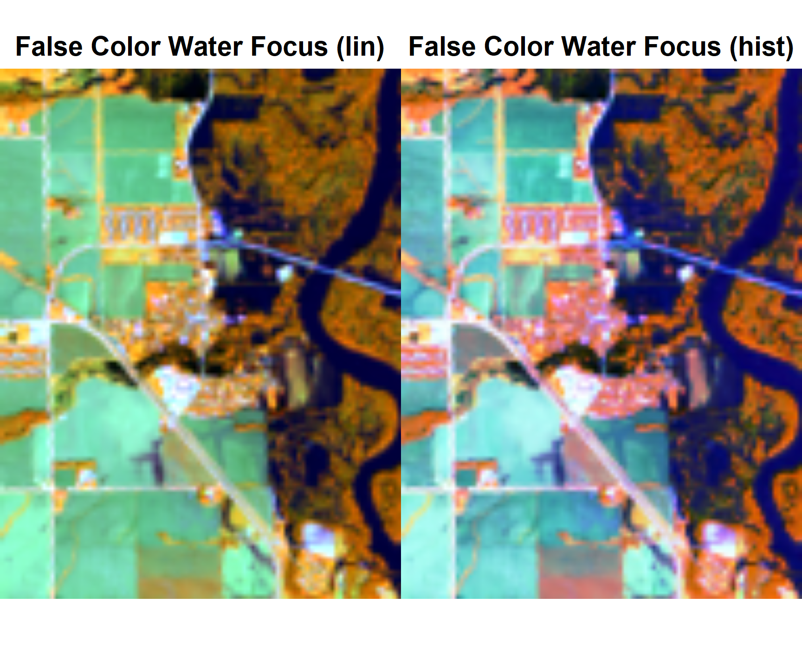
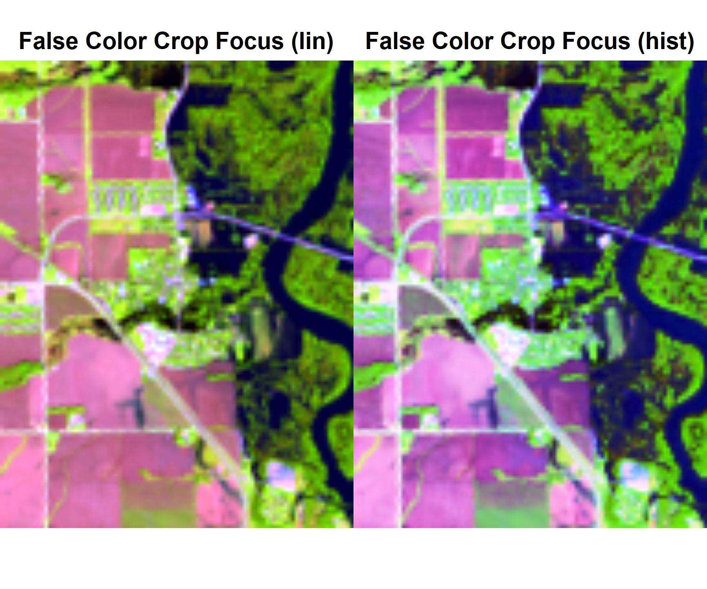
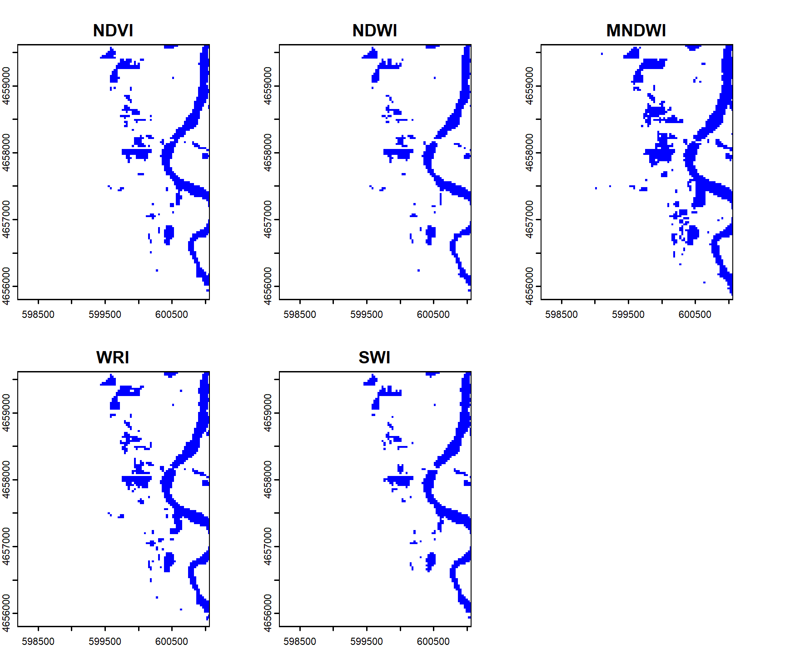
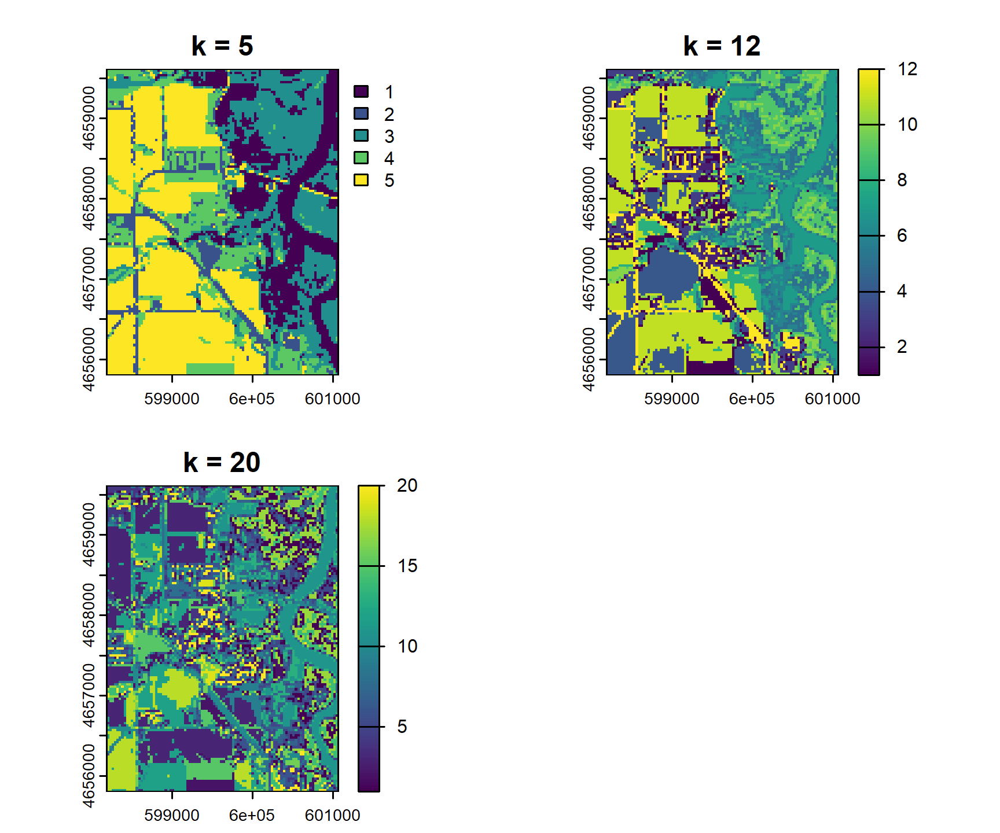
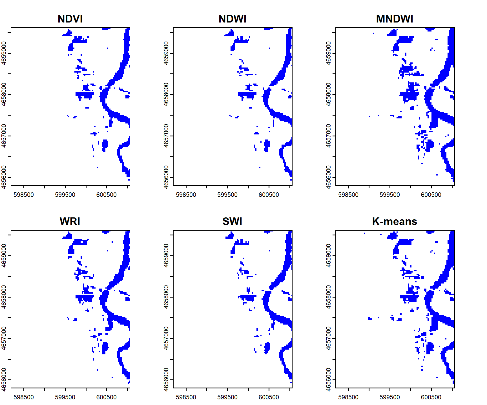

From the above output, we can see that the dimensions of the stacked image are 7801 x 7681 x 6 (six 7801 x 7681 images), the CRS of the stacked image is WGS 84 / UTM zone 15N, and the cell resolution (in meters) is 30 x 30.
Step 5: Analyze the images
Code
# Transforming AOI to CRS of landsat stackpalo <-st_transform(palo, crs =st_crs(raster))# Cropping raster stackrast_palo <- terra::crop(raster, palo)
Question 2: Image Creation
Code
# Plotting## Natural colorpar(mfrow =c(1,2))plotRGB(rast_palo, r ="red", g ="green", b ="blue", stretch ="lin", main ="Natural Color (lin)")plotRGB(rast_palo, r ="red", g ="green", b ="blue", stretch ="hist", main ="Natural Color (hist)")

Code
# InfraredplotRGB(rast_palo, r ="nir08", g ="red", b ="green", stretch ="lin", main ="Infrared Color (lin)")plotRGB(rast_palo, r ="nir08", g ="red", b ="green", stretch ="hist", main ="Infrared Color (hist)")

Code
# False color water focusplotRGB(rast_palo, r ="nir08", g ="swir16", b ="red", stretch ="lin", main ="False Color Water Focus (lin)")plotRGB(rast_palo, r ="nir08", g ="swir16", b ="red", stretch ="hist", main ="False Color Water Focus (hist)")

Code
# False color crop focusplotRGB(rast_palo, r ="swir16", g ="nir08", b ="red", stretch ="lin", main ="False Color Crop Focus (lin)")plotRGB(rast_palo, r ="swir16", g ="nir08", b ="red", stretch ="hist", main ="False Color Crop Focus (hist)")

In each set of two images, the left image has the “lin” stretch option and the right image has the “hist” stretch option. Stretching with “hist” raises the brightness and contrast of the images, which allows us to more clearly discern different areas of interest. The first set of two images shows the images in their natural color. We can see that Palo, Iowa has crops, some forested areas, and a large river. The second set of images are in infrared color and clearly highlight the areas of Palo with more vegetation. These areas are primarily around the waterways. The third set of images are in false color with a focus on the waterways (rivver the flooding), which are depicted in blue. Finally, the fourth set of images highlights the crops surrounding Palo in a bright pink/purple color. I tested different bands in different channels and this combination was the most striking to me.
The five images all clearly highlight the surface water features in Palo (the Cedar River and flooded areas), but vary in terms of color and how the surrounding area (cropland and vegetation) are shown. The NDVI shows pixels that are likely surface water features in dark blue while the NDWI shows pixels that are likely surface water features in red. The MNDWI also shows pixels that are likely surface water features in red but distinguishes less between surface water features and vegetation, so this method depicts the areas with vegetation as more similar to the surface water features than cropland (opposite of first two images). Finally, the WRI more distinctly identifies the surface water features in dark red and other areas (cropland and vegetation) in dark blue while the SWI only depicts surface water features in dark blue and ignores everything else (likely calculated as NA values due to negative within square root of formula).
Step 2: Raster Thresholding
Code
# Applying thresholdsndvi_water <-app(ndvi, function(x) (ifelse(x <0, 1, 0)))ndwi_water <-app(ndwi, function(x) (ifelse(x >0, 1, 0)))mndwi_water <-app(mndwi, function(x) (ifelse(x >0, 1, 0)))wri_water <-app(wri, function(x) (ifelse(x >1, 1, 0)))swi_water <-app(swi, function(x) (ifelse(x <5, 1, 0)))# Stacking and setting nameswater_stack <-c(ndvi_water, ndwi_water, mndwi_water, wri_water, swi_water)water_stack <-setNames(water_stack, c("NDVI", "NDWI", "MNDWI", "WRI", "SWI"))# Replacing all NA values with 0water_stack <-app(water_stack, fun =function(x) ifelse(is.na(x), 0, x))# Plotting stacked objectplot(water_stack, col =c("white", "blue"), legend =FALSE, main =names(water_stack))

Step 3
The maps are now very similar. The Cedar River is clearly identified as a water feature in all of the maps, but the identification of additional water cells (presumably flooding around the river, hence referred to as flooded cells) differs from map to map. The MNDWI and WRI rasters seem to identify the most flooded cells, while the SWI raster identifies the least. The NDVI and NDWI rasters idenify a level of flooding somewhere in between the MNDWI and SWI rasters and produce very similar maps.
There are 12,192 rows and 6 columns, which correspond to the 12,192 raster cells in each band and the six bands themselves. This tells me that the data were extracted cell by cell for each band.
Steps 3 & 4
Code
# Step 3: Applying k-means with 12 clusters (and others to see how map changes)km_12 <-kmeans(vals, centers =12)km_5 <-kmeans(vals, centers =5)km_20 <-kmeans(vals, centers =20)# Step 4: Creating raster from clusteringkm_12_raster <- rast_palo[[1]]km_12_raster[] <- km_12$clusterkm_5_raster <- rast_palo[[1]]km_5_raster[] <- km_5$clusterkm_20_raster <- rast_palo[[1]]km_20_raster[] <- km_20$cluster# Stacking and plottingkm_raster <-c(km_5_raster, km_12_raster, km_20_raster)km_raster <-setNames(km_raster, c("k = 5", "k = 12", "k = 20"))plot(km_raster, main =names(km_raster))

Step 5
Code
# Building tabletab <-table(values(ndwi_water), values(km_12_raster))# Identifying which cluster has the most overlap with flooded cells from NDWI rasterflood_cluster <-which.max(tab[2, ])# Creating flood maskkm_water <-app(km_12_raster, fun =function(x) ifelse(x == flood_cluster, 1, 0))# Adding to water stack and making new plotwater_stack_final <-c(water_stack, km_water)water_stack_final <-setNames(water_stack_final, c("NDVI", "NDWI", "MNDWI", "WRI", "SWI", "K-means"))plot(water_stack_final, col =c("white", "blue"), legend =FALSE, main =names(water_stack_final))

Question 5: Summary
Step 1: Caluclate total flooded area
Code
# Sum of flooded pixelsflooded_cells <-global(water_stack_final, sum, na.rm =TRUE)# Converting to area using cell resolution (30m x 30m = 900m^2)flooded_area_m2 <- flooded_cells*900# Printingprint(flooded_area_m2)
# Summing all rastersflood_agreement <-app(water_stack_final, fun = sum)# Plottingplot(flood_agreement, col = RColorBrewer::brewer.pal(9, "Blues"), main ="Flood Agreement (0-6)")
I’m not sure why some of the cell values are not even numbers. When we summed the water stack, the input rasters should’ve all had binary values and should’ve been perfectly aligned with the same resolution. If the input rasters were not perfectly aligned or had slightly different resolutions, it would explain why some cells aren’t integers (R automatically interpolates values to match grids). Another explanation would be that the edge pixels were averaged during the sum operation, but it’s not clear to me that this is the case.